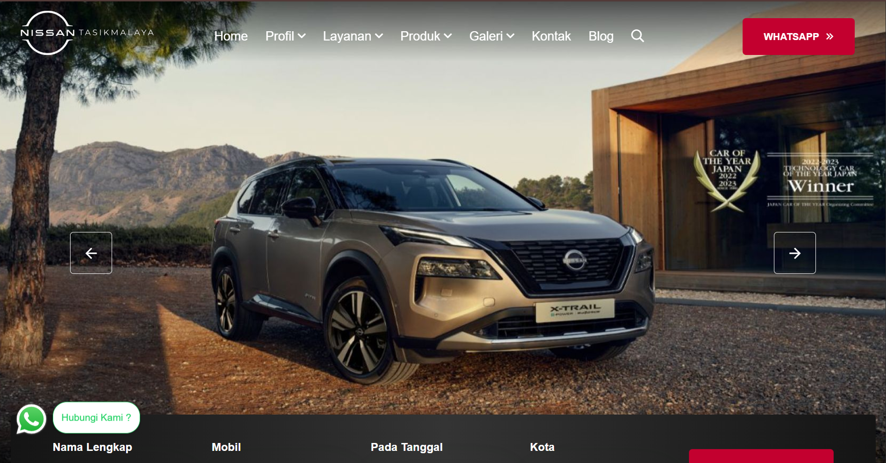
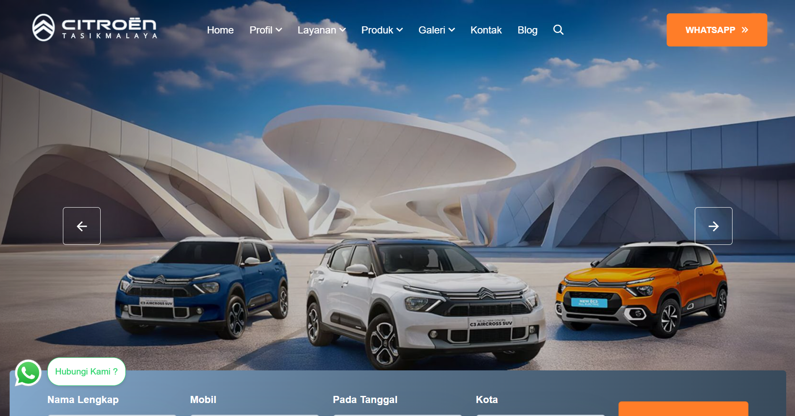
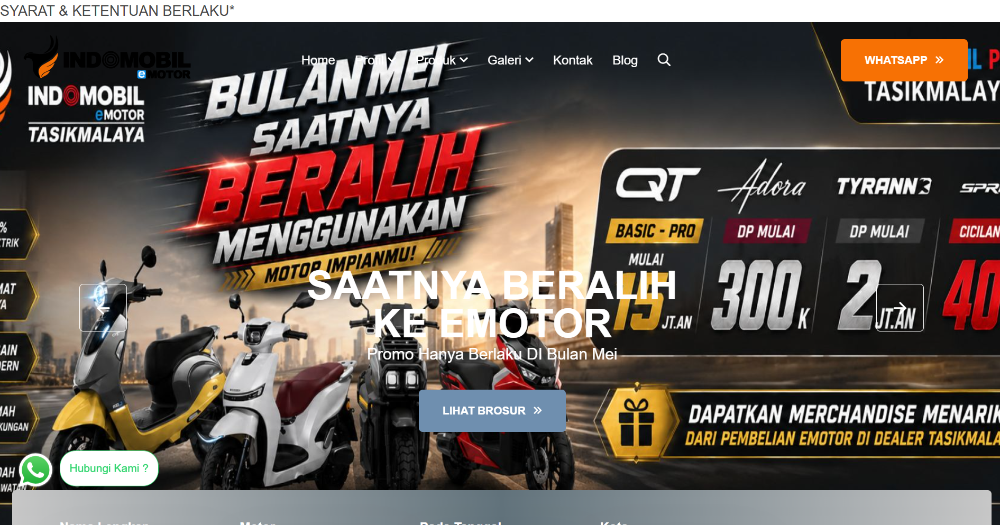
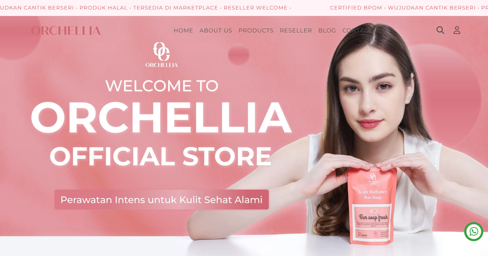

Saya adalah seorang Web Developer dengan pengalaman magang selama 4 bulan yang berfokus pada pengembangan aplikasi web berbasis PHP. Selama masa PKL, saya dipercaya untuk menangani siklus pengembangan web dari hulu ke hilir, mulai dari perancangan visual seperti desain banner halaman, implementasi frontend dan backend, hingga pengelolaan entry data.
Dengan pendekatan yang fleksibel dan adaptif, saya telah berhasil berkontribusi dalam pembuatan dan publikasi 4 website aktif, termasuk platform digital untuk dealer otomotif terkemuka. Saya selalu bersemangat untuk mempelajari teknologi baru dan siap memberikan kontribusi terbaik di industri teknologi.
0
Proyek Dikembangkan
0
Website Live / Rilis
0
Bulan pengalaman PKL
Mengembangkan aplikasi web yang dinamis dari sisi frontend hingga backend menggunakan bahasa pemrograman PHP, memastikan sistem berjalan dengan fungsional dan terstruktur.
Merancang tata letak halaman web serta memproduksi aset visual kreatif seperti banner promosi untuk meningkatkan daya tarik estetika dan fungsionalitas media digital.
Melakukan manajemen dan entry data produk secara akurat ke dalam sistem website, memastikan seluruh konten yang dipublikasikan valid dan siap diakses oleh pengguna.

Pengembangan website resmi dealer Nissan Tasikmalaya untuk mempermudah calon pelanggan dalam menjelajahi katalog mobil, melakukan booking servis, dan berinteraksi langsung dengan pihak sales.
Lihat detail
Membangun platform informasi digital untuk lini mobil Citroën di wilayah Tasikmalaya. Berperan aktif dalam implementasi fitur fungsional serta merancang aset banner yang estetik di halaman utama.
Lihat detail
Pembuatan website dealer kendaraan listrik (E-Motor) guna mendukung publikasi produk ramah lingkungan. Berfokus pada pengelolaan entri data produk secara presisi dan optimasi tampilan antarmuka.
Lihat detail
Berpartisipasi dalam tim pengembang untuk menyelesaikan website Orchellia menggunakan bahasa pemrograman PHP. Memastikan performa web responsif dan seluruh konten digital terintegrasi dengan baik.
Lihat detailPunya proyek menarik atau ingin berkolaborasi? Saya selalu terbuka untuk diskusi tentang desain, teknologi, data entry, atau peluang baru.
Pesan terkirim!
Tungguin yaa. Saya orangnya fast respond kok